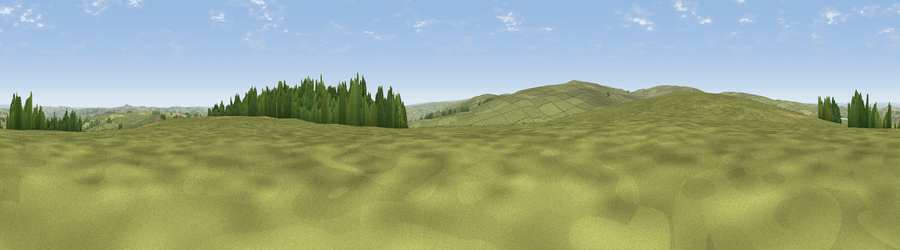

Viewpoint near Castleside
#22458 in England · top 54% of its area beats it · near CastlesideThe view, rendered

A 360° render of this exact spot computed from the terrain model, tree cover and land cover — summer colours, afternoon light, calibrated against photographs of famous viewpoints. Real trees, hedges and buildings will differ in detail.
The panorama
Grey silhouette: terrain skyline in each direction (720 bearings, Earth curvature and refraction included). Dashed green: skyline with trees (+15 m) and buildings (+8 m) as obstacles. Blue strip: how far the ground is visible on each bearing.
Where the view opens
Wedge length = distance to the farthest visible ground on that bearing (vegetation-aware). Rings at 10, 25 and 50 km.
What fills the view
85% grassland · 8% woodland · 5% cropland · 1% built-up
Angular shares of the visible panorama (visual magnitude), not map area. Landscape diversity 0.25 (0–1 Shannon).
Key numbers
More beautiful places nearby
The staircase of upgrades: each row has a higher view potential than everything closer. Driving times are estimates from straight-line distance, calibrated against real road routing — check an actual route before setting out.
| Place | Direction | Drive | Score |
|---|---|---|---|
| Viewpoint near Castleside | ENE · 2 km | ~6 min | 51.0 |
| Viewpoint near Castleside | NE · 3 km | ~8 min | 51.4 |
| Viewpoint near Castleside | NE · 3 km | ~8 min | 55.9 |
| Weather Law | SW · 4 km | ~8 min | 57.9 |
| Viewpoint near Frosterley | SSW · 4 km | ~9 min | 62.3 |
| Collier Law | SW · 5 km | ~10 min | 71.7 |
| Pontop Pike | NE · 13 km | ~24 min | 77.8 |
| Little Dun Fell | WSW · 37 km | ~55 min | 78.4 |
54.79783, -1.92103 · source: screening · position refined by local search. Computed location — check access rights before visiting.